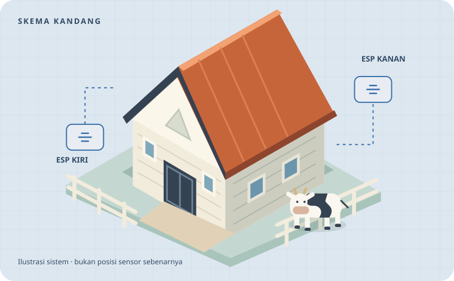

Sprinkler kandang
MATI
Siklus sedang tidak menyiram. Syarat mulai diperiksa perangkat.
Status siklus: siap dievaluasi.
0/3 mulai otomatis hari ini · tersedia.
COSTMOSYS · Cow Stress Monitoring System
Selamat datang di COSTMOSYS. Pantau kondisi Kandang A dalam satu tempat.
Kenali kondisi kandang. Kendalikan dengan data.

Status siklus: siap dievaluasi.
0/3 mulai otomatis hari ini · tersedia.
Pilih cara mengelola sprinkler
Manual tidak termasuk batas harian otomatis dan menyala sampai dimatikan. Mode otomatis mengikuti threshold dan proteksi.
Menunggu pengaturan tersimpan.
Min/maks antar titik · pembacaan terkini
0/6 sensor valid
Min/maks antar titik · pembacaan terkini
0/4 sensor valid · input RH untuk THI
Dihitung dengan rata-rata suhu dan kelembapan, dengan T sebagai suhu dan RH sebagai kelembapan:
THI = (1.8 * T + 32) - (0.55 - 0.0055 * RH) * (1.8 * T - 26).
Rata-rata 6 DS + RH rata-rata 4 DHT
Empat saluran bukti terpisah. Tidak digabung menjadi skor, label stres, atau diagnosis.
DATA SINTETIS · bukan pembacaan kandangMemuat pembacaan sensor…
Mengukur lingkungan kandang dari sensor yang masih terkini, bukan respons sapi.
Memeriksa umpan pengamatan…
Durasi postur hanya dari rentang video yang diproses, per zona, bukan jam berdiri satu sapi.
Memeriksa umpan pengamatan…
Tidak ada deteksi orang bukan bukti tidak ada orang. Kehadiran dalam detik tidak dicatat.
Menunggu laporan perangkat…
Status dan siklus berasal dari laporan perangkat, bukan penghitung browser.
Satu jam terakhir. Celah pada garis berarti data tidak tersedia.
Garis putus-putus menandai threshold pada dasar kontrol yang tersimpan. Data yang hilang tidak dianggap nol.
Perubahan berlaku setelah disimpan.
Hanya profil terpilih yang mengendalikan relay. Suhu dan THI tersimpan terpisah.
Threshold memulai semprot selama durasi yang dipilih, bukan menentukan kapan berhenti. Cooldown dihitung sejak sprinkler mati. Sensor tidak lengkap atau jadwal berakhir dapat menghentikan semprot lebih awal.
Batas ini menghitung mulai semprot otomatis per hari WIB pada perangkat, dipakai bersama profil Suhu dan THI. Semprot manual tidak termasuk batas otomatis dan menyala sampai dimatikan.
Pengaturan otomatis mengikuti kelengkapan sensor. Simulasi lokal.
Pembacaan suhu, kelembapan, dan THI dari perangkat.
Log ESP kanan tiap 30 detik · waktu WIB · data hilang tidak dianggap nol
| Belum ada riwayat sensor. |
Operasi sprinkler dan perubahan pengaturan.
Catatan perangkat dan pengelola, diurutkan dari yang terbaru.
Durasi postur yang teramati per zona kamera, dengan cakupan pengamatan.
Umpan sintetis dimuat untuk demo portofolio.
Zona kamera dapat saling tumpang tindih dan satu zona dapat memuat beberapa sapi. Durasi zona bukan jam berdiri atau berbaring satu sapi, tidak dijumlahkan antar zona, dan tidak diekstrapolasi ke 24 jam. Bagian yang tidak teramati tetap ditampilkan sebagai tidak teramati, bukan postur tebakan. Ini bukan penilaian stres atau kesehatan.
Kelola tim dan tentukan akses sesuai kebutuhan.
Tambahkan anggota ke Kandang A. Simulasi lokal — tidak membuat akun nyata.
Buka Tindakan untuk mengelola akses User.
Akun Admin dikelola melalui Firebase Console. Simulasi lokal.